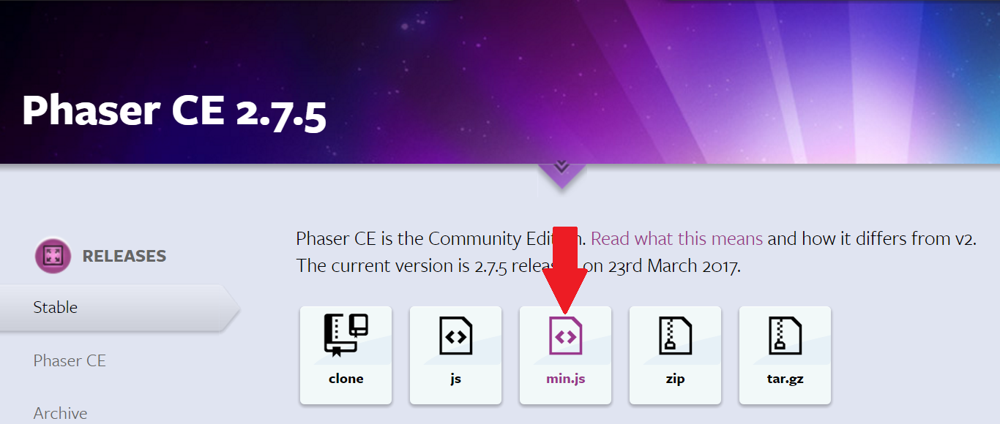

1. Create a folder for your project.
2. Inside the folder create another folder called js.
3. Download phaser.js file from phaser.io.
4. Cut and paste the file into the js folder.
5. Make sure you have installed Visual Studio Code.
You are now ready to create your Phaser game!